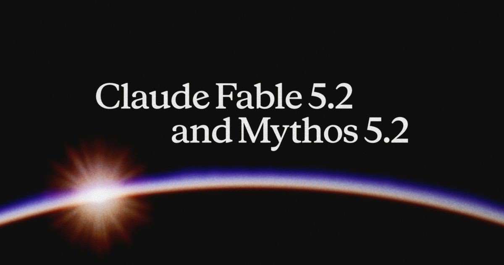
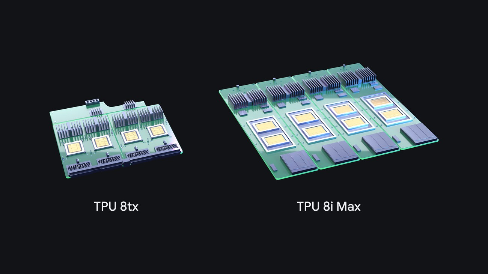
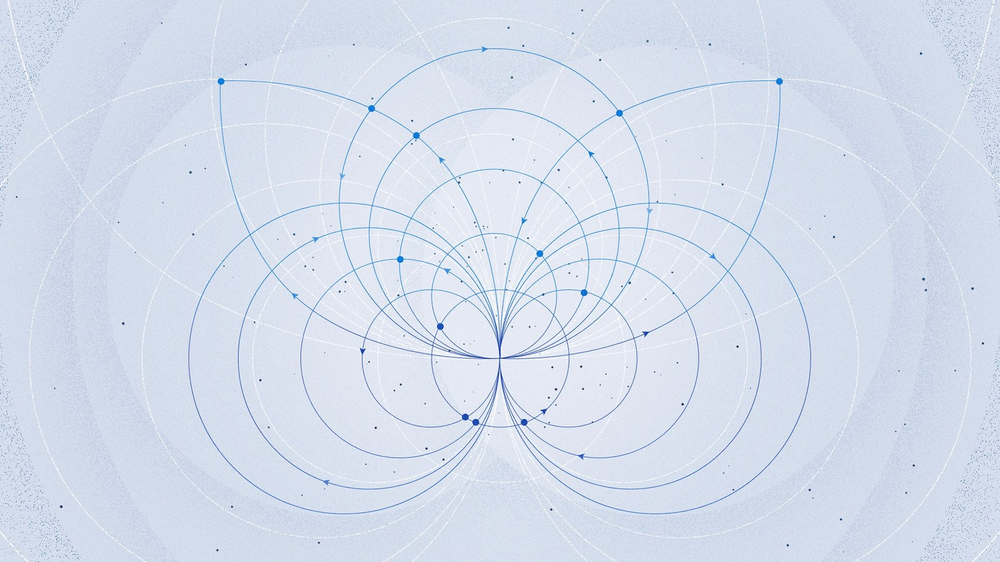
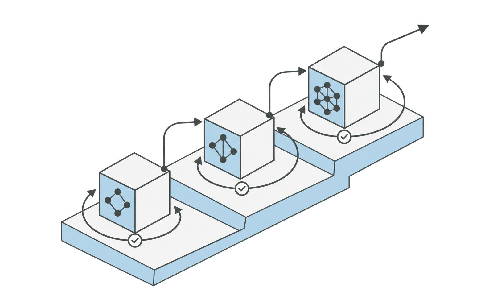

01模型 头条未证实项
Anthropic 发布 Claude Fable 5.2 与 Mythos 5.2：标准价降至 $8 / $40，FrontierCode 2.0 最高 49.1%
11-09 北京时间本日头条 · 热榜 #1 · 官博标注 Nov 9；官方 X 主帖北京时间 11-10 02:57，略出窗口独立来源 3 家

Claude Fable 5.2 与 Mythos 5.2 发布封面（图片来源：Anthropic Newsroom）
介绍
Anthropic 发布 Claude Fable 5.2 与 Claude Mythos 5.2：两者为同一底层模型，主打更难的技术任务，在编码、推理与视觉上有提升。Fable 面向所有用户，Mythos 去掉部分安全限制，需通过 Cyber 或 Life Sciences Verification Program 申请。官博给出的标准价为每百万输入 $8、输出 $40（前代 Fable 5.1 为 $10 / $50）；可选 Fast 模式最高约 2.5 倍出词速度，价格为 $16 / $80。官方称输出最多比 5.1 快 30%。Fable 5.2 已在所有付费方案、Claude Platform 及主要云平台上线。
为什么重要
这是当天分量最重的模型发布：把「日常主力」和「最难技术活」进一步拆开——官方仍建议多数编码与知识工作从 Opus 5.5 起步，把 Fable / Mythos 留给更开放、更长周期的任务。
要点
- 官方基准（最高可用 effort，除非另注）：FrontierCode 2.0 上 Fable 5.2 为 49.1%（Xhigh），高于 Fable 5.1 的 32.4%、Opus 5.5 的 45.5%、GPT-6 Astra 的 42.8%；官方称 High effort 时约与 Opus 5.5 Max（45.3% vs 45.5%）持平，单任务成本约一半。AutomationBench 51.4%，Terminal-Bench-Science 0.1 上 Fable 74.6%、Mythos 75.3%。
- 演示任务（官方口径）：预发布测试中，模型从一段提示出发设计了三款可工作的电子设备；1000 个 Fable 5.2 智能体用 30 小时完成费马大定理的形式化证明（同等设置下 Opus 5.5 在 18 小时内完成约 26%，30 小时后几乎不再推进）；并解决了两个与黑洞相关的理论物理开放问题，其中一项被官方称为搁置 23 年的计算。
- 怎么用：官方建议多数日常任务仍从 Opus 5.5 的 medium effort 起步，再按任务难度上调到 Fable / Mythos 或下调到 Sonnet / Haiku；Fable 也可做 Advisor 或 Orchestrator。第三方凌晨评测（如 Artificial Analysis、Arena 登顶分数）发生在北京时间 11-10 凌晨，不写入本期正文。
- 交叉与时区：官博标注 November 9, 2026；@claudeai 主帖
2119867114450268322 时间为 2026-11-09T18:57:59Z（北京 11-10 02:57），略出严格日历窗口。按官方日期与当日最大发布收入本期，并在文中标明。
⚠ 官方 X 主帖与线程位于北京时间 11-10 02:57 之后，略出 11-09 日历窗口；按官博日期收入本期
⚠ Artificial Analysis 65 分、Arena WebDev 1832 分等第三方凌晨评测不写入正文，留待 11-10 期
⚠ 黑洞问题与电子设备、费马证明均为官方演示/预发布测试口径，不是第三方复现
02基建
Google 一年内推出四款第八代 TPU：新增 8i Max 与 8tx
11-09 北京时间热榜 #3 · 官博 Nov 9 · @Google 北京 21:43，在窗口内独立来源 3 家

TPU 8tx 与 TPU 8i Max（图片来源：Google Blog）
介绍
Google 于 11 月 9 日宣布扩展第八代 TPU 产品线，新增 TPU 8i Max 与 TPU 8tx，使一年内发布的第八代 TPU 系统达到四款（另两款为今年 4 月的 8t 与 8i）。官方称这是公司十多年来首次在一年内推出四款 TPU 系统。8i Max 面向超大上下文与单机架最高算力密度；8tx 面向安全与机密推理。
为什么重要
在黄仁勋风波与出口管制高压的同一周，Google 用「同一代硅片、两套新系统」继续铺开与英伟达竞争的云侧选择，尤其把机密计算和超长上下文写成独立机型。
要点
- 8i Max：把两颗 TPU 8i 芯片封装在一起，官方称算力、SRAM 与 HBM 带宽均相对 8i 翻倍，并在原有机架占地内放入两倍硅片，强调单机架密度与大规模上下文。
- 8tx：基于与 8t 相同的硅片，搭配 第 5 代 AMD EPYC 主机处理器，把安全做进硬件层，使敏感数据与模型权重在使用中仍保持隔离；官方称相对 TPU 8t 延迟最多降低 2 倍，并可用于私有数据微调、蒸馏与强化学习，而不必在集群间搬运敏感数据。
- 软件栈：官方称 TorchTPU 可让 PyTorch 与 Hugging Face 模型在 TPU 上原生运行、无需改写代码；开源 TPU Sync 将 KV 传输延迟与首 token 时间降低 90% 以上。博文还称 TPU 已有近 100 家客户。
- 未公布：两款新系统均未给出绝对规格、独立基准、价格与可用区域。4 月那对 8t / 8i「训练性能最高约 2.7 倍、推理性价比高约 80%」是相对上一代的旧口径，不要误当成今天的新测分。
03模型未证实项
Meta 发布最小最高效模型 Muse Ember：API 价 $0.10 / $0.50，对标 Haiku 级智能体任务
11-09 北京时间热榜 #4 · 官博标注 Nov 9；官方 X 线程北京 11-10 02:04，略出窗口独立来源 3 家

Muse Ember 博文头图（图片来源：Meta Superintelligence Lab / research.meta.ai）
介绍
Meta Superintelligence Lab 发布其最小、最高效的模型 Muse Ember（muse-ember-1.0），面向工具调用、编码子任务、路由、抽取和长文档解析等智能体高频重复工作。官方定价为每百万输入 $0.10、每百万输出 $0.50，已在 Meta Model API 上线；官博称其具备 100 万 token 上下文，并可原生理解文本、图像、音频和视频。
为什么重要
小模型开始按「智能体一天要跑的那些碎步骤」来定价和评测。若官方对比站得住，高频子任务的单位成本会再被压一档。
要点
- 官方对比（引用 Artificial Analysis，标注 November 9）：Muse Ember 在 Intelligence Index 上最高约 36 分，与 Claude Haiku 5.5（max，约 36）持平，高于 GPT-6 Luna（约 28）；官博称它在 Haiku 最佳分数附近只需约三分之一的单任务成本，并在 Luna 的所有推理档位上得分更高。表中 Ember max 单任务成本约 $0.136、Haiku max 约 $0.411。官博注明 Ember 成本按定价估算。
- 其他官方评测摘录：AutomationBench-AA 37.8（Haiku max 13.9 / Luna max 20.2）；OSWorld 2.1 部分分 Ember 69.5、Haiku 68.9、Luna 50.5。部分项目上 Haiku 仍领先（如 FrontierCode 2.0-AA 上 Haiku 34.9、Ember 27.2），不能把「全面超过」写进正文。
- 合作方早测（官方转述）：Cloudflare 称尾部延迟最高约快 30%；You.com 称 p95 约 2.2 秒。这些是合作方说法，不是独立基准。
- 时区：官博
article:published_time 为 2026-11-09T00:00:00.000Z；@AIatMeta 发布线程为 2026-11-09T18:04:15Z（北京 11-10 02:04），略出窗口。凌晨的 OpenRouter / Arena 跟进不写入本期正文。
⚠ 官方 X 线程在北京时间 11-10 02:04，略出严格日历窗口；按官博日期收入本期
⚠ Intelligence Index 与单任务成本来自 Meta 对 Artificial Analysis 的引用和估算，不是 Meta 自测的唯一分数
04图像未证实项
字节发布 Seedream 5.5：同一作品最多 100 轮编辑，并可原生输出 RGBA 透明图
11-09 北京时间热榜 #5 · Seed 官博标注 2026-11-09 · IT之家 17:35独立来源 3 家
Seedream 5.5 官方示例拼图（图片来源：字节跳动 Seed 官博）
介绍
字节跳动 Seed 团队于 11 月 9 日发布图像创作模型 Seedream 5.5，官博列出三项升级：非编辑区域像素级保持，同一作品最多可连续编辑 100 轮；新增原生 RGBA 透明或半透明输出，带 Alpha 通道，减少后期抠图；并改善光照、材质、皮肤纹理与密集小字渲染。模型正陆续在即梦、豆包、豆包工作与火山方舟上线，后续计划推出 Pro 版本。
为什么重要
专业图像工作流最怕「改一处、别处跟着跑」。把百轮稳定性和透明素材写成一等能力，是在和设计、电商、影视的生产步骤对齐，而不只是再刷一张好看的演示图。
要点
- 官方评测：相对 Seedream 5.0 Pro，电商、营销、影视、游戏、办公、服装设计六类场景的生成效果与可用率均有提升，其中影视与办公可用率达到上一版本的两倍以上。真实感图生图的 GSB 为 +55.62%。
- 文字：在覆盖中英文及密集小字的评测中，严重文字崩坏率降至 0.4%，轻微崩坏率降至 1.7%。官博称在文字结构、文生图真实感上相对 GPT Image 2.5 Sunburst、Nano Banana 2.1 等主流模型表现领先——这是官方对照，不是第三方复测。
- 价格（官博未写）：IT之家与新浪等转述，API 延续「输入图 + 输出图」两段计费、文本 Token 免费，2K 方图编辑单张约 0.28 元、不到 5.0 Pro 一半，并将于本周上线火山方舟。上述价格未出现在 Seed 官博，文中标未证实。
- 交叉：Seed 官博（一手，11-09）+ IT之家 17:35（窗内）+ AIHOT 热榜 #5。
⚠ 2K 方图编辑约 0.28 元、文本 Token 免费等定价来自 IT之家/新浪转述，Seed 官博未公布，标未证实
05安全未证实项
OpenAI 上线 Control Room：研究侧模型负载可在 35 秒内停止输出
11-09 北京时间AIHOT 记官网动态 11-09 21:00；官方 X 帖北京 11-10 06:01，略出窗口独立来源 2 家
Control Room 介绍图（图片来源：OpenAI）
介绍
OpenAI 发布 Control Room：一套集中追踪并快速停止其研究基础设施中模型工作负载的系统，覆盖训练采样、评估和数据处理等智能体推理任务。官方称，从收到停止指令到模型无法继续产出，上限是 35 秒（来自授权缓存层），并已部署于研究基础设施。系统采用 fail-closed 设计：Control Room 服务宕机或被关闭时，所有推理请求都会被拒绝。
为什么重要
模型越强，研究集群里一次跑飞的代价越大。OpenAI 选择把「叫停权」做在推理引擎这一层，而不是指望各研究团队自己的任务代码守规矩。
要点
- 机制：每个做智能体推理的研究任务必须关联一份已批准的 safety case，并向 Control Room 申请
job_id；推理引擎在满足每次采样前向 Control Room 询权，任务被标记停止后即拒绝继续输出。官方强调不把关键安全逻辑放在多变的 workload 代码里。 - 35 秒与 fail-closed：35 秒是缓存带来的上限，官方写明正在把这一延迟往零推进。fail-closed 已覆盖所有前沿模型研究负载，其余研究负载将在「接下来几天」完成推广。对外的模型服务栈本身更集中，不在这次宣布的同一套系统里。
- 与监测的关系：前沿强化学习任务配有监控模型；监控系统可直接通知 Control Room 停掉对应
job_id。官博提到近期一次与 DNS 相关的事件就是由监控捕获的。 - 时区：AIHOT 将官网动态记为 11-09 21:00；@OpenAI 原帖
2119913172039868579 时间为 2026-11-09T22:01:00Z（北京 11-10 06:01），略出窗口。直接访问 openai.com 时 curl 返回 403，正文依据页面抓取工具读到的官网全文核对。
⚠ 官方 X 帖在北京时间 11-10 06:01，略出严格日历窗口；AIHOT 将官网动态记在 11-09 21:00
⚠ Control Room 目前针对 OpenAI 自己的研究基础设施，不是对外 API 的同等开关
06产业
Adobe 与迪士尼宣布多年联盟：用 Firefly Foundry 做艺术家主导的定制生成模型
11-09 北京时间热榜 #8 · Adobe 新闻稿 美东 11-09 06:00（北京 19:00），在窗口内独立来源 3 家
Adobe 与迪士尼联盟新闻稿配图（图片来源：Adobe Newsroom）
介绍
Adobe 与华特迪士尼公司在 Adobe MAX（迈阿密海滩）宣布多年战略联盟，Adobe 成为迪士尼的 Official AI Innovation Partner。迪士尼将获得 Firefly、Firefly Foundry、Premiere 与 Photoshop 等最新工具的早期访问，以及专项工程与研究支持。双方将基于 Firefly Foundry，为迪士尼自有角色、场景和视觉风格训练艺术家主导、可商用的专有生成模型。
为什么重要
版权方不再只是「要不要允许模型训练」，而是直接把自有 IP 做成封闭的生产模型。这会改变主题公园、工作室和体育内容生产线里生成式工具的位置。
要点
- 已经在用：华特迪士尼幻想工程研发团队已用 Firefly Foundry 做主题公园管线，包括把手绘概念变成完整 2D 概念图的 sketch-to-image 模型，以及生成符合品牌与片单设定的定制图像模型。
- 覆盖范围：新闻稿点名华特迪士尼世界、迪士尼乐园、迪士尼邮轮、ESPN Edge 与 Movie Studio 的 StudioLAB；Adobe 加入 StudioLAB Innovation Partner，并将与 ESPN Edge 探索体育叙事和归档内容的新用法。
- 时间：新闻稿标注 Monday, November 9, 2026 6:00AM。MAX 在迈阿密海滩，按美东时间换算为北京 19:00，在日历窗口内。路透等亦在当日报道。
- 交叉：Adobe 新闻稿（一手）+ 路透路径转述 + The Verge（AIHOT 记 11-09 23:38）+ AIHOT 热榜 #8。
07工具未证实项
千问办公 2.0 发布：把 Agent 带进工作群，定位 Team Agent
11-09 北京时间热榜 #10 · IT之家 16:15 · 官方更新日志同日独立来源 3 家
千问办公 2.0 开箱直播视觉（图片来源：InfoQ 转载的活动海报 / 千问办公）
介绍
钉钉系产品 千问办公 于 11 月 9 日发布 2.0，定位面向个人与组织协作的 Team Agent。IT之家援引钉钉官方消息称，这一版上线「协作」「人机共创」「资料空间」「自动任务」和「三端互联」，把 Agent 从个人助手扩展到可加入工作群的协作成员；官方客户端更新日志日期同为 2026 年 11 月 09 日，目前功能已在客户端全量上线。
为什么重要
多数办公 Agent 还停在「一个人跟模型聊天」。把数字员工放进真实的群、文档和待办里，是在赌下一阶段的工作单元是「人 + Agent 的共享空间」。
要点
- 协作空间：可关联多个钉钉群聊、文档、AI 表格和 AI 听记，支持并行会话与任务指派；成员指派任务后，数字员工结合空间上下文梳理进展、总结共识并跟进待办。
- 自动任务与人机共创：原「定时任务」入口改名为「自动任务」，新增事件触发（指定人消息、群内 @自己、审批等）。人机共创打通对话、预览与编辑，可在文档、AI 表格、宜搭应用里多人、多 Agent 同时改。
- 三端与远控：更新日志写明移动端 App 上线，可用手机远程控制已授权电脑上的千问办公；任务可在云端执行并跨网页、移动、钉内等端同步。企业管理后台可禁止客户端远程控制。
- 交叉：官方更新日志（一手）+ IT之家 16:15（援引钉钉官方）+ InfoQ（引用官方博客《千问办公 2.0：主动与协同，迈向 Team Agent 时代》，该博文原链本期未直接打开）。
⚠ InfoQ 引用的官方博客原链本期未直接打开，相关表述以客户端更新日志和 IT之家援引的官方消息为准
08研究未证实项
百度发布 ERNIE Evolve 自动研究系统：在两项公开任务上超过此前公开最好成绩
11-09 北京时间文心官博条目 11-09独立来源 2 家

ERNIE Evolve 博文封面（图片来源：文心大模型官网）
介绍
百度文心团队发布自动研究系统 ERNIE Evolve：围绕明确目标与约束，持续提出研究方向、做实验、验证结果并积累经验。系统用双层循环组织工作——外层决定研究什么，内层把一个方向做深——并由 Director、Selector、Executor、Evaluator、Reviewer 分工。官博称，它在 NanoChat AutoResearch 与 NanoGPT Speedrun 两项公开任务上超过目前公开验证的最好结果，并已用于正在开发的 ERNIE-5.5-Flash 推理效率优化，改进获得生产级验证。
为什么重要
自动研究一旦能在真实仓库里改代码、跑评测并留下可复用经验，模型厂的迭代速度本身也会变成竞争变量。官方同时强调评测程序对智能体不可见，并设复核，以防刷榜或钻评测漏洞。
要点
- 公开任务成绩（官方表，指标方向以官网为准）：NanoChat AutoResearch 验证集 BPB 0.8763（越低越好；社区公开最佳 0.8878）；NanoGPT Speedrun Track 1 达标训练时间 38.9 秒（社区最佳 39.9 秒）；Track 3 达标训练步数 2590（社区最佳 2690）。SOL-ExecBench 平均 SOL 分数 0.819，低于社区公开最佳 0.827，官博没有把这一项写成「超过最好成绩」。
- 工作方式：Director 从经验库与知识库提出方向；Selector 在研究线内选起点和假设；Executor 在隔离环境改代码；Evaluator 是放在仓库外、对智能体不可见的固定评测；Reviewer 检查是否偏离方向或利用评测漏洞。
- 落地：官博称在公开任务验证后，将系统用于 ERNIE-5.5-Flash 的推理效率优化，发现的改进得到生产级验证并带来「可观收益」。官网未给出具体加速百分比，本文不编造数字。
- 交叉：文心官博（一手）+ AIHOT 11-10 日报收录。本期未读到第二家完整媒体长文，独立来源按官博 + AIHOT 计，并在状态表说明。
⚠ SOL-ExecBench 未超过社区公开最佳，正文已写明
⚠ 「可观收益」为官方定性表述，无公开百分比
⚠ 第二家媒体全文未逐篇核对，独立来源记 2（官博 + AIHOT）
Zyphra 开源 ZONOS3-Mini：总参 **8 亿** / 激活 **1 亿**，可在手机浏览器实时语音克隆11-09官方称这是 Apache 2.0 的稀疏 MoE 零样本 TTS，用 112 张 H100 训练 2.5 天；Pixel 9 浏览器端 Time To First Audio 低于 570 ms，M3 MacBook Air 低于 150 ms。权重在 Hugging Face，并提供 WebGPU / SGLang / vLLM / GGML 运行时。
马斯克称已与 Grok Bot 工程团队复盘，修复「连夜实施」，「明天」应有明显改善11-09@elonmusk 11-09 10:25（北京，窗内）：刚与 Grok @Bot 工程团队圆桌复盘，修复正在连夜落地；若未见改善可回复该帖。热榜后来出现的「已为所有用户重置每周限额」发生在北京时间 11-10 03:17 之后，略出窗口，不作为本期结论。
耶鲁教授 Sonnenfeld 估计黄仁勋留任概率约 **50-50**；媒体称风波削弱其对出口管制的游说11-09董事会独立调查已在 11-08 周末合刊作为头条写过。本期新进展是窗内分析：TechCrunch 11-09 13:26 刊出与 Jeffrey Sonnenfeld 的访谈，他给出约五五开的个人估计（这是观点，不是调查结论）；The Decoder 19:38 讨论其对游说严格出口管制的影响。情报指认本身仍为匿名信源、未证实。Trump 表态、Culper 旧报告、退出演讲等主要出现在 11-10 凌晨，留待下期。
Anthropic：JPMorganChase 把 Claude Code 扩展到更多员工11-09Claude 官方文章标注 November 9：摩根大通正把 Claude 从工程团队扩展到更广的员工，Claude Code 已进入其工程工作流（告警监控、根因分析、风险与控制评估、项目规划等），并运行在公司自有容器化开发平台 Devspace 上，新模型需经内部审批。
OpenAI 访谈 CodeRabbit CEO：近 6 个月不增工程师的情况下，发货量约提升 **20 倍**11-09官网动态标注 11-09 16:00。数字来自受访公司转述，不是 OpenAI 自己的对照实验。openai.com 直接请求曾返回 403，本期未逐字打开该文全文，仅按 AIHOT 摘录收录，标未证实。
AIHOT 日报 11-09/11-10 + latest/hot读到
11-09 日报多为周末已覆盖项；主线取自 11-10 日报中时间戳落在 11-09 或官博标注 Nov 9 的条目，并剔除纯 11-10 凌晨第三方评测
X 公开数据（官方账号/搜索）部分读到
search_posts_all / get_users_posts 可用；窗内读到 @Google / @googlecloud / @elonmusk；Fable、Ember、Control Room 官方主帖均在北京时间 11-10 凌晨，已标明略出窗口
你在窗口内发的推文（@HhhharryRen）读到 · 没更新
get_users_posts 接口正常返回，窗口内 0 条
你的 X 收藏读到 · 没更新
可读本页 30 条；窗口内 0 条新收藏，最新仍为 2026-11-02 @0xluffy_eth
WaytoAGI 飞书知识库读到
公开 wiki；已展开 11-09 5 条并合并，邻近 11-08 及更早仅作上下文、不计入本期
官方页面核对读到
Anthropic Fable/电子设备/Fermat；Google TPU 博文；Meta Ember；Seed 官博；OpenAI Control Room（curl 403，经页面抓取读到）；Adobe 新闻稿；千问办公更新日志；文心 Evolve；Zyphra；Claude JPMorgan 文章
媒体交叉读到
IT之家、The Decoder、SiliconANGLE、TechCrunch、新浪科技、InfoQ、路透转载等
openai.com 直接抓取部分读到
Control Room 经抓取工具读到全文；CodeRabbit 访谈文 curl 403，未核对全文，速览已标明